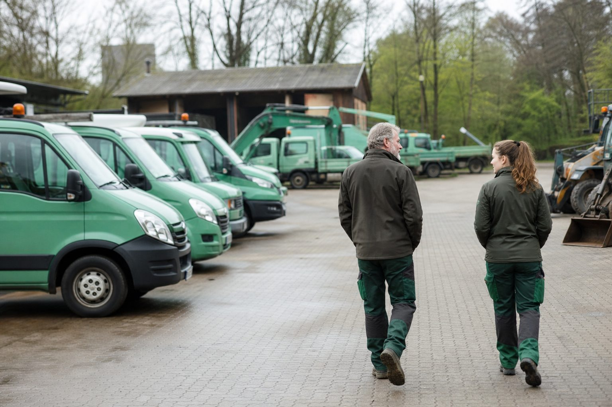

Betriebsnachfolge: 186.000 Unternehmen suchen bis 2030 einen Nachfolger – im GaLaBau entscheidet der Meister im eigenen Haus
Das IfM Bonn hat seine Schätzung für die Jahre 2026 bis 2030 vorgelegt. Weniger Übergaben als erwartet, weil viele Betriebe wirtschaftlich unattraktiv geworden sind. Was das für Inhaber bedeutet, die in fünf Jahren aufhören wollen.

- IfM Bonn: rund 186.000 Unternehmen stehen 2026 bis 2030 vor der Übergabe – 800 pro Jahr weniger als zuvor geschätzt, weil viele Betriebe unattraktiv geworden sind.
- Im GaLaBau mit knapp 20.000 Betrieben und steigenden Insolvenzen ist der wahrscheinlichste Nachfolger intern: Meister, Bauleiterin, Vorarbeiter.
- Der Fünf-Jahres-Plan: klären, aufbauen, übergabefähig machen, finanzieren, übergeben – mit 58 beginnen, nicht mit 63.
Rund 186.000 Unternehmen in Deutschland stehen zwischen 2026 und 2030 vor der Übergabe, weil ihre Inhaber aus Altersgründen, wegen Krankheit oder durch Tod ausscheiden. Das ist die aktuelle Schätzung des Instituts für Mittelstandsforschung (IfM) Bonn – und sie liegt unter der vorherigen Prognose: rund 800 Übergaben pro Jahr weniger als für den Zeitraum 2022 bis 2026 erwartet. Nicht, weil die Inhaber jünger geworden wären, sondern weil sich die wirtschaftliche Lage vieler Betriebe verschlechtert hat und Übernahmen damit weniger attraktiv sind. Ein Betrieb, der keinen Nachfolger findet, wird nicht übergeben. Er wird geschlossen.
Was das für den GaLaBau heißt
Die Branche zählt knapp 20.000 Betriebe, die meisten inhabergeführt, viele in der ersten oder zweiten Generation. Das IfM weist keine Zahlen für den Landschaftsbau aus, aber die Altersstruktur der Inhaber unterscheidet sich nicht von der des Handwerks: Ein erheblicher Teil ist über 55. Auf die Branche übertragen bedeutet die Schätzung, dass in den kommenden fünf Jahren mehrere tausend GaLaBau-Betriebe einen Nachfolger brauchen – in einer Phase, in der Insolvenzen zunehmen und Banken Übernahmen kritischer prüfen.
Der Anteil der familieninternen Übergaben geht nach den Daten des IfM leicht zurück; externe Lösungen – Verkauf an Mitarbeiter, an Wettbewerber, an Investoren – gewinnen an Bedeutung. Für den GaLaBau ist der naheliegende externe Nachfolger meistens intern: der Meister, die Bauleiterin, der Vorarbeiter, der den Betrieb seit fünfzehn Jahren kennt.
Der Fünf-Jahres-Plan
Eine Übergabe, die gelingt, beginnt fünf Jahre vor dem Ausstieg. Nicht wegen der Bürokratie, sondern wegen der Menschen: Der Nachfolger muss Kunden, Mitarbeiter und Lieferanten übernehmen, und das geht nur, wenn er sie kennt, bevor der Inhaber geht.
Jahr 1: Klären. Will jemand aus der Familie? Wenn nicht: Wer im Betrieb könnte es? Ein offenes Gespräch mit der Bauleitung ist der erste Schritt – und oft der, der am längsten hinausgezögert wird. Parallel: Was ist der Betrieb wert? Ein Steuerberater mit Branchenerfahrung liefert eine erste Bewertung; die Kammern und die Nachfolgebörse nexxt-change bieten Beratung.
Jahr 2 und 3: Aufbauen. Der Nachfolger übernimmt Verantwortung, die sichtbar ist: eigene Kunden, eigene Kalkulationen, die Personalführung einer Abteilung. Der Inhaber zieht sich aus dem Tagesgeschäft zurück, bleibt aber erreichbar. Gleichzeitig wird der Betrieb übergabefähig gemacht: dokumentierte Abläufe, saubere Verträge, bereinigte Bilanz, geklärte Immobilienfragen.
Jahr 4: Finanzieren. Kaufpreis, Ratenzahlung, Beteiligung in Stufen, Nießbrauch für den Inhaber – die Varianten sind zahlreich, und keine funktioniert ohne Bank. Förderkredite der KfW und der Landesbanken für Übernahmen existieren, brauchen aber einen Businessplan und einen Nachfolger, der ihn vertreten kann.
Jahr 5: Übergeben. Mit Termin, mit Kommunikation an Kunden und Mitarbeiter, mit einem klaren Ende der Rolle des Alt-Inhabers. Übergaben scheitern selten am Vertrag und häufig daran, dass der Senior nach der Übergabe weiter entscheidet.
Wenn niemand will
Nicht jeder Betrieb findet einen Nachfolger. Dann bleibt der Verkauf an einen Wettbewerber, der Mitarbeiter, Fuhrpark und Kundenstamm übernimmt, oder die geordnete Schließung mit rechtzeitiger Information der Belegschaft. Beides ist besser als das, was das IfM in seinen Zahlen sichtbar macht: Betriebe, die ohne Plan auslaufen, weil ihr Inhaber zu lange gehofft hat.
Quellen
- Institut für Mittelstandsforschung Bonn: Unternehmensnachfolgen in Deutschland 2026 bis 2030, Daten und Fakten Nr. 37 (rund 186.000 Unternehmen mit anstehender Nachfolge; rund 800 weniger pro Jahr als in der Schätzung 2022 bis 2026) – www.ifm-bonn.org/fileadmin/data/redaktion/publikationen/daten_und_fak...
- IfM Bonn: Business successions stagnate despite demographic change (Meldung) – www.ifm-bonn.org/en/news/meldung/business-successions-stagnate-despit...
- BGL: GaLaBau-Branchenstatistik 2025 (19.898 Betriebe, 133 Insolvenzen), Pressemitteilung vom 27. Februar 2026 – www.presseportal.de/pm/117960/6225203
Kommentare
Noch keine Kommentare. Schreiben Sie den ersten.

11,11 Milliarden Euro Umsatz, 133 Insolvenzen: Der GaLaBau in Zahlen
Die Branchenstatistik 2025 des BGL zeigt einen Markt, der wächst und gleichzeitig ausdünnt: mehr Umsatz, mehr Beschäftigte – und deutlich mehr Betriebe, die aufgeben mussten.
Insolvenzen: Höchster Stand seit 2013 – der Bau liegt 4,5 Prozent über dem Vorjahr
Creditreform zählt für das erste Halbjahr 12.900 Unternehmensinsolvenzen. Der Bau steigt moderater als die Dienstleister, aber von hohem Niveau. Was GaLaBau-Betriebe jetzt für ihre Forderungen tun sollten.
Jahresrückblick 2025: Was das Jahr für GaLaBau-Betriebe gebracht hat
Ein Tarifplus, ein Mindestlohnbeschluss, ein stabiler Auftragsbestand mit schmalen Erträgen und die Erkenntnis, dass jede zweite Kündigung vom Mitarbeiter kommt. Zwölf Monate in zehn Punkten.